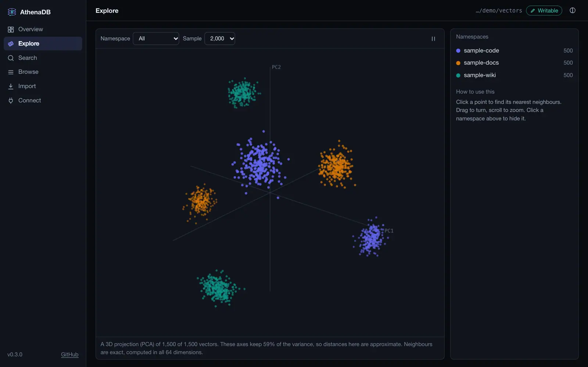
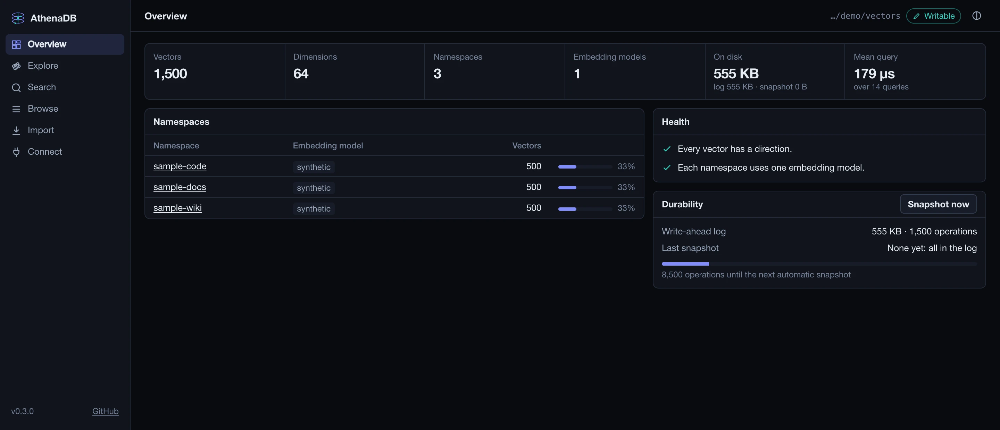
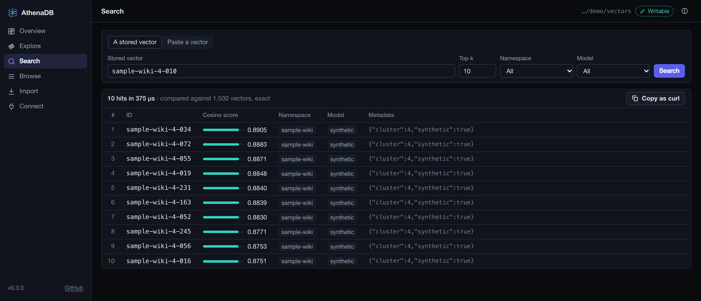
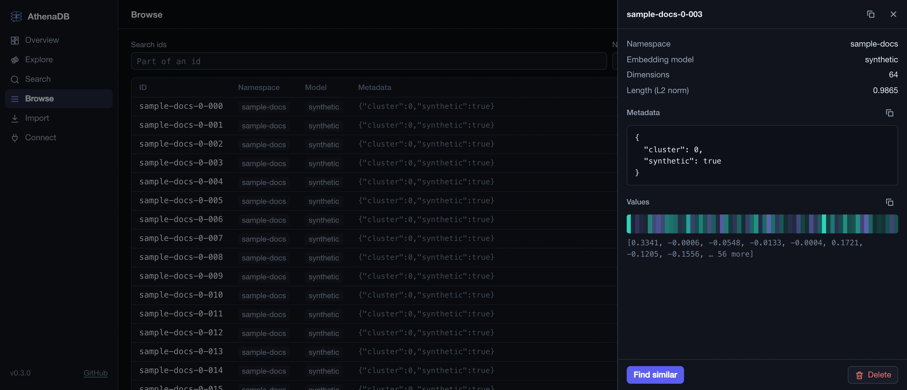
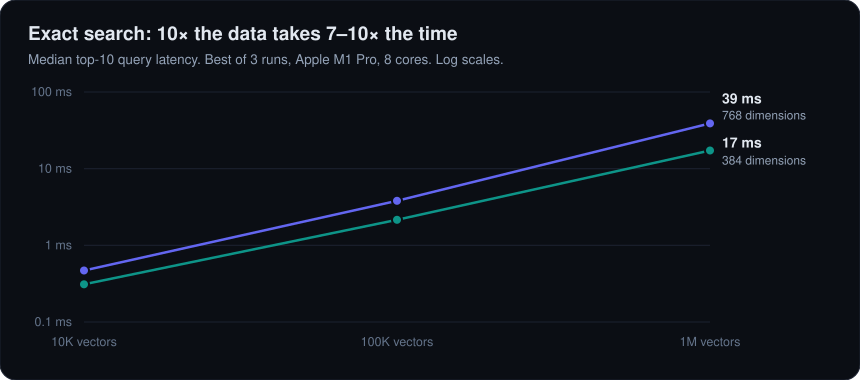

Fast without an index
SIMD cosine over wide::f32x8, run in parallel with rayon. Reciprocal
norms are computed at insert, so each comparison is a dot product plus one multiply.
Open source · Apache-2.0
An embeddable vector database in Rust. SIMD cosine search, parallel top-k, and a
write-ahead log that survives kill -9. Use it from Python or Rust, with no server to run, and look inside with a local dashboard.
SIMD cosine over wide::f32x8, run in parallel with rayon. Reciprocal
norms are computed at insert, so each comparison is a dot product plus one multiply.
kill -9Every write reaches the log and fsync before memory changes. Snapshots are atomic. A write torn in half by a crash is detected and ignored on recovery.
Every vector records its embed_model_id, and queries can filter on it, so you never
compare vectors from incompatible models by accident.
A namespace is a field on every vector, not a migration you run later. Filter queries and scans by it from the start.
Quick start
There's no package on PyPI yet, so build from source. You need a Rust toolchain and an active Python virtualenv.
git clone https://github.com/aniketshukla1/athenadb && cd athenadb
pip install maturin
maturin develop --releaseimport athenadb
db = athenadb.AthenaDB("./data")
db.add(
ids=["cat", "kitten", "car"],
vectors=[[0.9, 0.1, 0.0], [0.85, 0.2, 0.0], [0.0, 0.1, 0.95]],
metadatas=['{"kind": "animal"}', '{"kind": "animal"}', '{"kind": "vehicle"}'],
namespace="pets",
embed_model_id="bge-small",
)
db.query([1.0, 0.0, 0.0], k=2, namespace="pets", embed_model_id="bge-small")
# [('cat', 0.9939, 'pets', 'bge-small', '{"kind":"animal"}'),
# ('kitten', 0.9734, 'pets', 'bge-small', '{"kind":"animal"}')]use athenadb::core::Entry;
use athenadb::db::Database;
let mut db = Database::open("./data")?;
db.add(Entry {
id: "cat".into(),
vector: vec![0.9, 0.1, 0.0],
metadata: serde_json::json!({ "kind": "animal" }),
namespace: "pets".into(),
embed_model_id: "bge-small".into(),
inv_norm: 0.0, // computed on insert
})?;
for hit in db.search(&[1.0, 0.0, 0.0], 2, Some("pets"), Some("bge-small"))? {
println!("{} {:.3}", hit.id, hit.score);
}Dashboard
Turn it in 3D, click a point for its exact nearest neighbours, and check its health. It's a single binary of about 2 MB, with nothing to build and nothing loaded from the internet.



curl.
cargo install --git https://github.com/aniketshukla1/athenadb --features server
athenadb --data ./my-store --writableHow it works
Writes go to the log first, then memory. Reads scan every vector in parallel and keep the best k. After a crash, the last snapshot loads and the log replays on top of it.

Performance

| Vectors | 384 dimensions | 768 dimensions |
|---|---|---|
| 10,000 | 0.31 ms | 0.47 ms |
| 100,000 | 2.15 ms | 3.81 ms |
| 1,000,000 | 17.2 ms | 39.0 ms |
cargo test --release --test bench -- --ignored --nocaptureStatus
SIMD cosine search, parallel top-k, namespaces, model tags, write-ahead log, atomic snapshots,
crash recovery, scan, Python bindings, an HTTP API and a dashboard.
An ANN index (HNSW or IVF), group commit across concurrent writers, and a re-embedding
pipeline keyed on embed_model_id.